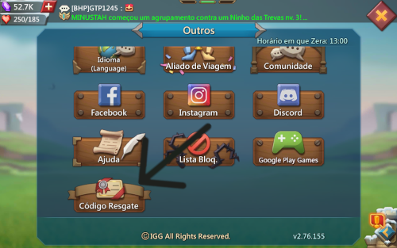
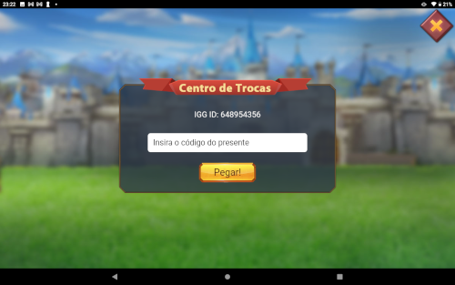

Pra que servem os codigos no lords mobile?
Eles servem para dar intens de graça para os players, Os itens variam. cada codigo tem intens diferentes más todos ajudam na evolução do player
Como usar os codigos no Lords mobile?
1) Primeiro passo voçes terão que logar no jogo e abrir as configurações

2) Depois vão rolar a tela um pouco para baixo e clicar em "Codigo de resgate"

3) Depois que voçes estiverem nessa tela é so digitar o codigo e clicar em "PEGAR"

VEJA OS CODIGOS DISPONIVEIS